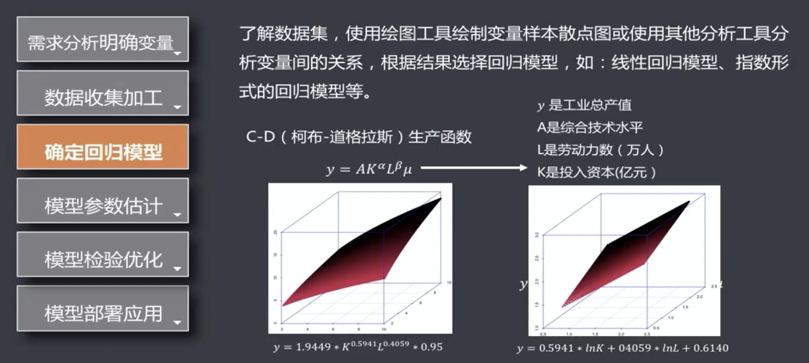
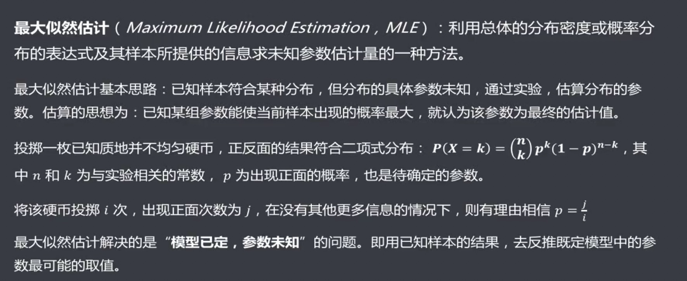

基础知识
几个基本概念
基本流程
特征，特征向量，特征空间，假设空间
机器学习实质：就是在假设空间中去搜索一个适合当前数据的假设
机器学习方法的三要素
模型
策略
经验风险与结构风险
损失函数
经验风险
经验风险问题
结构风险
正则化项
范数
模型评估与选择
了解模型选择的原则
误差
误差：模型的预测值与真实值之间的差异
训练：通过已知的样本数据学习，从而得到模型的过程
训练误差：模型作用于训练集时的误差
泛化：由具体的、个别的扩大为一般的，即从特殊都一般，称为泛化。对机器学习的模型来讲，泛化是指模型作用于新的样本数据（非训练集）
泛化误差：模型作用于新的样本数据时的误差
欠拟合和过拟合
模型选择
掌握交叉验证法评估模型
评估思路
留出法
交叉验证法
留一法
自助法
几种方法适用模型

熟悉常见模型的性能指标
分类算法的性能度量
聚类算法的性能度量
了解模型评估的误差与方差
假设检验
假设检验过程
例子
偏差，方差与噪声
泛化误差的推导

回归分析
回归的定义
线性与非线性
线性回归

几个基本假设
建立回归模型流程

回归模型的特点
一元线性回归

一元线性回归模型
最小二乘估计

最大似然估计

有偏估计与无偏估计
各种检验方法：t, f检验等